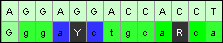

Mesquite can color cells based on quality from Phred/Phrap. Each called base is assigned
a score, reflecting the error probability of the call. Quality coloring can be toggled on/off by touching
on the  button below the taxon names or
from the Matrix menu: Matrix > Color Cells > Quality from Phred/Phrap.
Higher quality base calls are paler (white), while low quality calls are darker (blue). Sites with ambiguous
base calls are colored grey.
button below the taxon names or
from the Matrix menu: Matrix > Color Cells > Quality from Phred/Phrap.
Higher quality base calls are paler (white), while low quality calls are darker (blue). Sites with ambiguous
base calls are colored grey.
 An example of quality-colored cells. The first sequence has high quality base calls for all characters shown. The second sequence has multiple low-quality calls and two ambiguous sites (Y = C or T, R = A or G). |
 |
In addition to coloring the cells, Mesquite colors the background of the taxon name based on a composite quality score for the entire sequence. Higher qualilty sequences are paler, while lower quality sequences are darker.